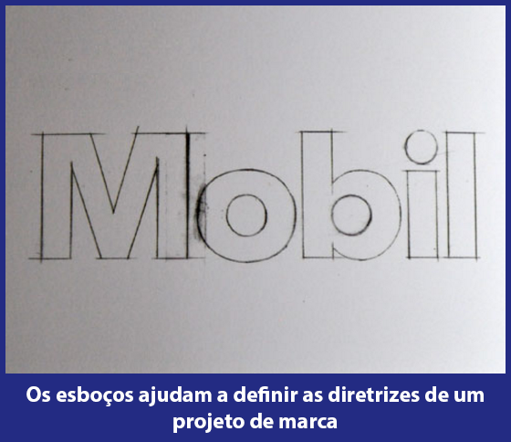
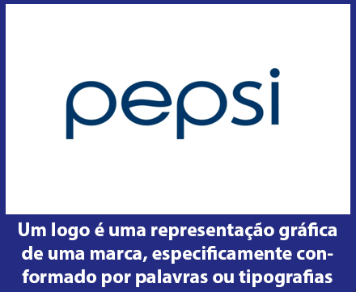
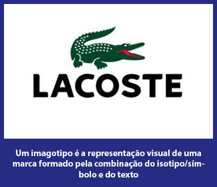
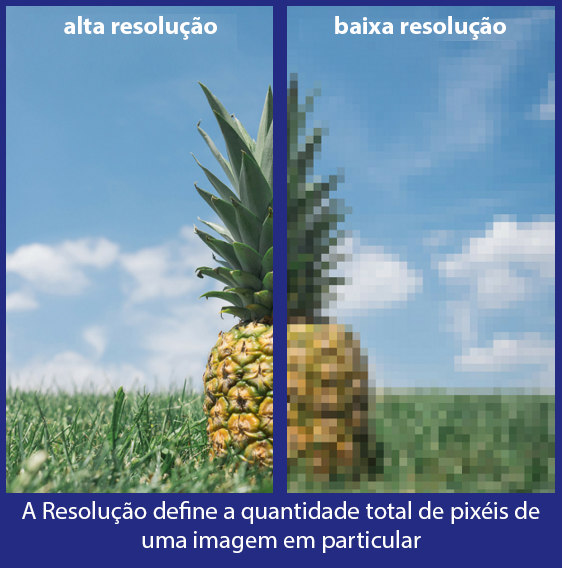
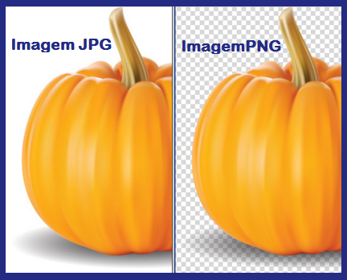
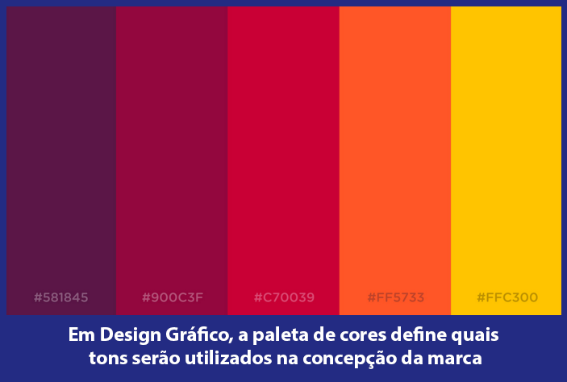
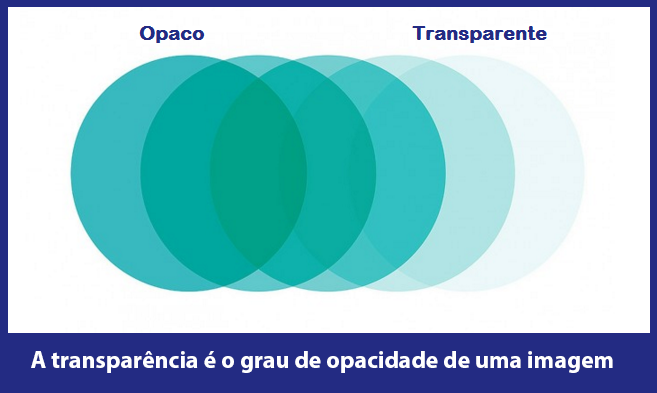
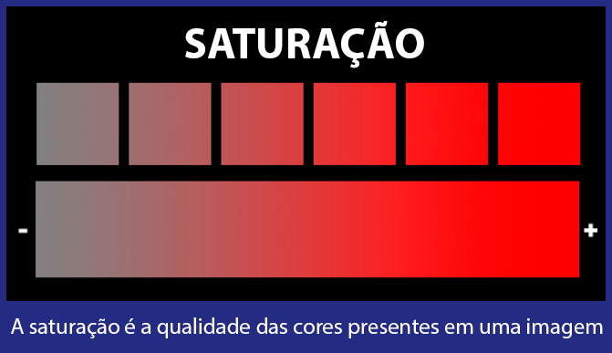
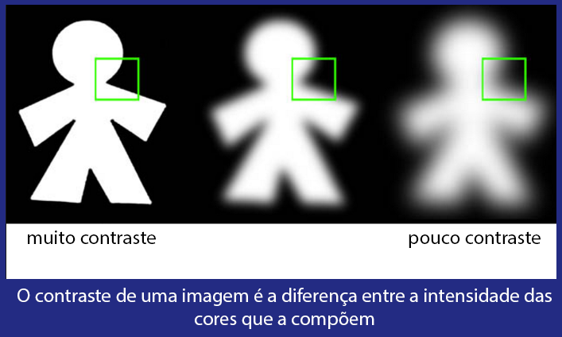

Design Digital
Glossário
|  | Esboço - Um esboço é um desenho ou representação gráfica de uma ideia e tem como objetivo ilustrar o desenvolvimento de uma peça visual (como um logotipo). Funciona como um rascunho e serve para avaliações e correções necessárias até chegar ao produto final. A ideia é sempre chegar o mais próximo possível do objeto ideal e, posteriormente, finalizar o projeto de design gráfico. |
|  | Logotipo - O termo logotipo tem a ver com a representação gráfica de uma marca, exclusivamente conformado por palavras ou tipografia. Sendo assim, os símbolos institucionais ou empresariais que apresentem desenhos e símbolos não são necessariamente um logotipo (como vamos ver mais pra frente). |
 |
Isotipo ou Símbolo - Um isotipo é a representação de uma marca, mas não apresenta elementos textuais. Neste caso, é o exato oposto do logotipo. O objetivo aqui é representar a identidade de um empreendimento, produtos ou serviços, diretamente com um símbolo, ícone ou desenho, para que os usuários reconheçam a marca somente ao visualizar a imagem. |
|  | Imagotipo - O imagotipo é a combinação do símbolo + isotipo ou símbolo. Ou seja, ambos elementos são apresentados juntos. A principal característica é o fato de que ambos os elementos (símbolo e texto) não podem ser separados, ou seja, têm que “funcionar” harmoniosamente quando mostrados em conjunto. |
|  | Resolução de Imagem - Este termo, quando usado no ambiente de Design Gráfico, define a quantidade total de pixels de uma imagem. Maior resolução, maior nível de detalhe. A nitidez tem muito a ver com a resolução, já que com mais informação visual, os detalhes se vêm melhor. De fato, a maioria das plataformas de Social Media pedem formatos e resoluções específicas, você pode saber um pouco mais sobre isso lendo nosso artigo Dimensões recomendadas para Social Media. |
| > | Imagem JPG ou PNG - JPG e PNG são ambos formatos de imagem, cada um é mais ou menos indicado dependendo do seu uso. O formato JPG apresenta mais cores e é perfeito para compartilhar fotos com muita resolução nas Redes Sociais. Por outro lado, o formato PNG foi pensado especificamente para uso web por ser “lido” mais rápido por navegadores. |
|  | Paleta de Cores - Em Design Gráfico, a Paleta de Cores define exatamente os tons das cores que serão usados para criar uma peça gráfica em particular. Também pode ser definida de forma mais geral, por exemplo quando dizemos que deve-se usar uma paleta de “Cores Quentes”, como por exemplo laranja, amarelo, vermelho e etc; já o contrário das “cores quentes” são as “cores frias”, tais como azul claro, verde bebe, etc. |
|  | Transparência / Opacidade - Uma imagem pode ser mais ou menos transparente. O termo define quão translúcida pode ser uma peça visual específica. Ou seja, uma imagem com um alto grau de transparência tem a característica de permitir a visualização de algo que está “atrás”. Já se a imagem tem um nível de opacidade muito alto, a mesma tem mais clareza na informação que quer transmitir. |
|  | Saturação - A Saturação é a qualidade das cores presentes em uma imagem. Então, uma imagem mais saturada possui cores mais intensas (em termos específicos, menos “cinza” na cor, mais saturada se vê). Na verdade, imagens muito saturadas podem até dificultar a visualização da peça gráfica. Já imagens com um ligeiro grau de saturação podem ficar mais atraentes. |
|  | Contraste - O contraste de uma imagem pode ser medido em relação à diferença entre as cores que a compõem, principalmente na zona de transição. Quando há duas áreas com cores diferentes, a transição entre elas pode ser mais ou menos brusca. Se há uma espécie de degradé entre ambas as partes, o contraste diminui. |